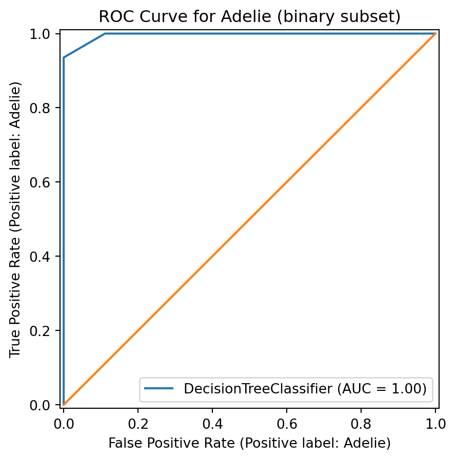

import pandas as pd
penguins = pd.read_csv('penguins.csv')PA 8.2 (3)
Palmer Penguins Modeling
Import the Palmer Penguins dataset and print out the first few rows.
Suppose we want to predict species using the other variables in the dataset.
Dummify all variables that require this.
import pandas as pd
import numpy as np
from sklearn.pipeline import Pipeline
from sklearn.compose import make_column_selector, ColumnTransformer
from sklearn.preprocessing import StandardScaler, OneHotEncoder, PolynomialFeatures
from sklearn.linear_model import LinearRegression, Ridge, Lasso, ElasticNet
from sklearn.model_selection import train_test_split, cross_val_score, GridSearchCV, KFold, cross_val_predict, StratifiedKFold
from sklearn.metrics import confusion_matrix, accuracy_score, precision_recall_fscore_support, roc_auc_score, RocCurveDisplay, classification_report
from sklearn.neighbors import KNeighborsRegressor, KNeighborsClassifier
from sklearn.tree import DecisionTreeRegressor, DecisionTreeClassifier
import math
from plotnine import *Let’s use the other variables to predict species. Prepare your data and fit the following models on the entire dataset:
- Two kNN models (for different values of K)
- Two decision tree models (for different complexities of trees)
Compute the following, for each of your models, on test data. Keep in mind that you may need to stratify your creation of the training and test data.
- Confusion matrix
- Overall Accuracy
- Precision, Recall, AUC, and F1-score for each species
Create one ROC plot for the species of your choice.
# Code Here
penguins = penguins.dropna()
y = penguins['species']
X = pd.get_dummies(
penguins[['body_mass_g', 'island', 'flipper_length_mm', 'bill_length_mm', 'sex', 'year', 'bill_depth_mm']],
columns=['island', 'sex'],
drop_first=True
)
# Splitting data into training and testing
yt, yv, Xt, Xv = train_test_split(y, X, test_size=0.2, random_state=42)# Two kNN models
for k in [3,5]:
pipe = Pipeline([
('scaler', StandardScaler()),
('knn', KNeighborsClassifier(n_neighbors=k))
])
pipe.fit(Xt, yt)
y_pred = pipe.predict(Xv)
print(f'k={k}')
print(confusion_matrix(yv, y_pred))
print(classification_report(yv, y_pred))k=3
[[31 0 0]
[ 0 18 0]
[ 0 0 18]]
precision recall f1-score support
Adelie 1.00 1.00 1.00 31
Chinstrap 1.00 1.00 1.00 18
Gentoo 1.00 1.00 1.00 18
accuracy 1.00 67
macro avg 1.00 1.00 1.00 67
weighted avg 1.00 1.00 1.00 67
k=5
[[31 0 0]
[ 0 18 0]
[ 0 0 18]]
precision recall f1-score support
Adelie 1.00 1.00 1.00 31
Chinstrap 1.00 1.00 1.00 18
Gentoo 1.00 1.00 1.00 18
accuracy 1.00 67
macro avg 1.00 1.00 1.00 67
weighted avg 1.00 1.00 1.00 67
for d in [2, 5]:
tree = DecisionTreeClassifier(max_depth=d)
tree.fit(Xt, yt)
y_pred = tree.predict(Xv)
print(f'depth={d}')
print(confusion_matrix(yv, y_pred))
print(classification_report(yv, y_pred))depth=2
[[31 0 0]
[ 2 16 0]
[ 0 0 18]]
precision recall f1-score support
Adelie 0.94 1.00 0.97 31
Chinstrap 1.00 0.89 0.94 18
Gentoo 1.00 1.00 1.00 18
accuracy 0.97 67
macro avg 0.98 0.96 0.97 67
weighted avg 0.97 0.97 0.97 67
depth=5
[[31 0 0]
[ 0 18 0]
[ 0 0 18]]
precision recall f1-score support
Adelie 1.00 1.00 1.00 31
Chinstrap 1.00 1.00 1.00 18
Gentoo 1.00 1.00 1.00 18
accuracy 1.00 67
macro avg 1.00 1.00 1.00 67
weighted avg 1.00 1.00 1.00 67
import matplotlib.pyplot as plt
# ROC Curve for one species (Adelie vs Gentoo)
keep = ['Adelie', 'Chinstrap']
mask_tr, mask_te = yt.isin(keep), yv.isin(keep)
Xtbin, Xvbin = Xt[mask_tr], Xv[mask_te]
ytbin, yvbin = yt[mask_tr], yv[mask_te]
dt = DecisionTreeClassifier(max_depth=2, random_state=42)
dt.fit(Xtbin, ytbin)
RocCurveDisplay.from_estimator(dt, Xvbin, yvbin, pos_label='Adelie')
plt.plot([0,1], [0,1])
plt.title('ROC Curve for Adelie (binary subset)')
plt.show()